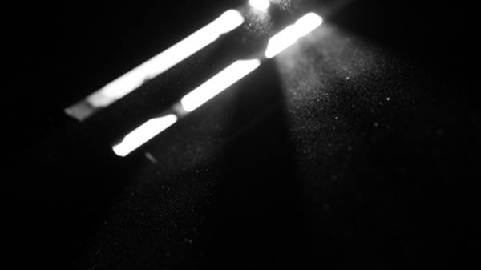

自述 | 欺凌——只配成为历史
自出生我就被算命先生说成是个有福相的人，眼睛很大的男娃，以后绝对有出息。这种缺乏科学依据的有趣言论，再之后被人多次说过。
我得事先声明，接下来我并不是来诉苦的，我只是在说明一些我的事实。

我也不知道是从多久开始，不太愿意接触男性，即使我也是男性。在那个性别意识并没觉醒的幼儿园时期，我几乎都是和女生玩在一起，天天闹在一堆，和她们做她们的游戏，玩女生玩的玩具，甚至和她们一样去憧憬一个王子的角色。
至于之后喜欢同性可能与这个有关。
与女生的过于亲密招来所有男生的排挤，那时大多数家长包括我自己父母的教育都是：男生就应该和男生在一起玩，女生就该和女生玩，男女有别。
于是男生们得到了资本，孤立我的资本，不和他们站一起的即为异类。女生们在之后也受到男女有别的相关说辞的教唆，也逐渐远离我。
我终于成了一个人。
孤单并不是我有得选的，他们眼里的我是没有选择权的。
我有尝试过热脸贴冷屁股。我把自己的玩具挨着递到别人的手里：陪我玩一下吧，陪我一下吧，就一下，求你了......姿态出乎意料的低。他们有接过我的玩具，并没在乎我话中的内容。至于之后我是否能在放学时准时收回我的玩具或者是否收回一具玩具的尸体，也是我没法控制的。
我只记得几次对着那些人的家长哭闹告状，目睹那些大人对自己孩子宠溺的训斥；甚至几次朝自己父母倾诉后换来一句：这就是你的不对了，一个玩具而已，我是不是教过你要和同学团结相处......
嗯，所有人都叫我学会一样被视为生存之道的东西，隐忍。

跨进小学，换个环境是该重新开始，然而才进校时的和谐退散得迅猛。
七岁这年，我猝不及防的被迫贴上一个“娘娘腔”的标签。我身体里潜移默化的一些阴柔气质被大家抓了个正着，于是我成了所有人课余时间的闲话，无聊时嘲讽的对象。我并没有反抗，因为我受到的“高等教育”是“以礼相待”。
我只用笑，对所有冷嘲热讽唇枪舌箭微笑，忍受在唾沫淤积的泥潭中浸泡，我想我会得到我应得的善待。大人们告诉我的。
但他们并没告诉我，有“得寸进尺”的存在。
事情进展到一种似乎无法挽回的地步，我的退让被当作软弱可欺，我给的笑脸被视为城府极深。班上不知出了外贼还是内贼，不用在意，只要是谁丢了东西，那绝对是我“偷”的，即使后来有找到的，我的名声都摆在那了，有口难辩，用他们的话说：长了贼相。倒是苦了了班主任，收到众多关于我的告状，没查出事件原委，他也没法给我说法。
除此之外的好些荒谬就不一一列举了。小事堆积多了迟早会搞大。
我开始受到好些肢体攻击，经常在没预判的情况下飞来一记拳头或巴掌甚至一脚，然后我猛然的送走那些跑开的嬉皮笑脸。这些还好，那时男生中莫名流行起来的某个游戏拿我做了试验品，我经常忽然被一群男生强按住四肢，然后用力抓捏我的生殖器，高呼让我变成太监，惹得女生们惊叫欢笑。也会猝不及防的被偷偷跟来身后的男生用合在一起的两根手指，猛的戳进肛门，疼在地上蜷缩，听众人开怀大笑。
一切的原因竟是：看我不爽，就想整。
没有原因的原因是最难成立的，却也是最难反驳的。
直到六年级时，一次考试我不小心考了前几名，再挑不出其他原因，放学后，我被一群人围堵在学校后的巷子，先是基本的辱骂，再是用膝盖砸肚子和下体，我滑到墙角，竭力捂住肚皮忍痛，我透过他们腿与腿之间的那一点缝隙，望见巷口那些驻足围观又离开的人们，第一次感到绝望。

初中也再次违背了我的希望。
以同寝室室友为首的男生群体接替了“玩”我的任务。不一样的是我初中有了些脾气，我适时的会做出相应的反抗，但室友扔来的一句话让我瞬间瘫软下来：只要我半点反抗，他们就拿不小心和我分进同一个班的堂妹来整……
接下来初中三年，我包干了整个寝室的每日卫生，替他跑各种各样的腿，有时要替他洗衣服，甚至他的内裤袜子......对外我也顶着他带头的讥讽、谩骂、挑衅……
直到初二开始的某天。

他向我的一女性朋友表白多次，次次被拒。
再次被拒的那一晚，他在寝室发了很久的脾气。熄灯上床过后不久，他在他那边叫我名字，说要过来到我床上睡，我拒绝了，他完全没理会，带有威胁的爬上我的床。
过一会儿他开始在我身上胡乱的摸，像是要钻进我皮肤的力度，然后他掐住我脖子，在我耳边低声勒令我跟他去阳台的厕所，同寝室的人都睡了，没人知道。
我迟疑的跟他去了厕所，他锁上门，逼我到墙面，提出要求，要我为他口交。
我果断拒绝，他又一次提出关于我堂妹等人的让我无力反抗的胁迫，在我还挣扎的时候，他将我狠狠的摁下身，将他的生殖器硬塞进我嘴里……
之后此类事件，持续长达两年。
……
我现在将这些说出来，并不是想博得同情。这是发生在我身上的事情，它是事实，事实是应该让人看见的。
过去这么久，在经历了高中以及大学忽如其来的善待之后，我已经能把它们消化安放，平静的阐述。
没有谁错了，也没有谁对了。
若说期望，我愿它是唯一的，没人经历第二次、第三次、第四次……如此境遇。
它与它们，只配成为历史。
（图片来自互联网）